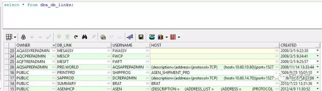
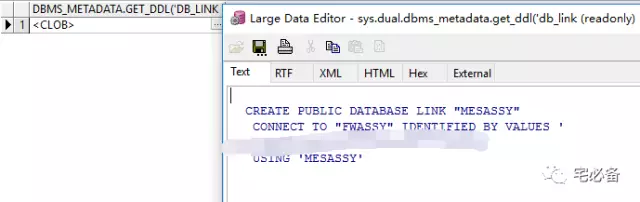

Oracle DBLink相关内容
这个专题主要是一些日常运维中需要用到的命令，不定期更新~~
1. 查看DB Link的状态
select * from dba_db_links;

2. 获取DBlink 定义语句
SQL>select dbms_metadata.get_ddl('DB_LINK' ,'MESASSY', 'PUBLIC') from sys.dual
SQL>select dbms_metadata.get_ddl('DB_LINK' ,'MESASSY', 'AQASSYREPADMI') from sys.dual

3. 新建DBlink
sys用户执行
如不是建立共用的db link 请去掉public关键字
-
如建立Public db link，则该db link属于sys用户
-
如建立非public，则该db link属于建立的用户，导出(exp/expdp)时会导出
3.1 不使用本地服务名:
create public database link MESCP
connect to XXXX IDENTIFIED BY XXXX
using '(description=(address=(protocol=TCP)
(host=10.65.1.87)(port=1522))(connect_data=(SERVICE_NAME = MESCP)))';
3.2 使用本地服务名:
create public database link MESCP
connect to XXXX IDENTIFIED BY XXXX
using mescp;
4. 删除DB Link：
drop public database link dblinkname;